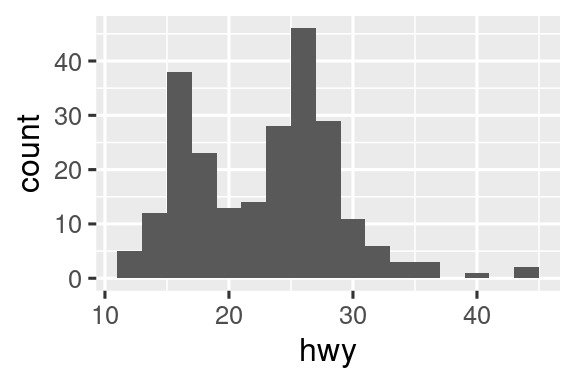
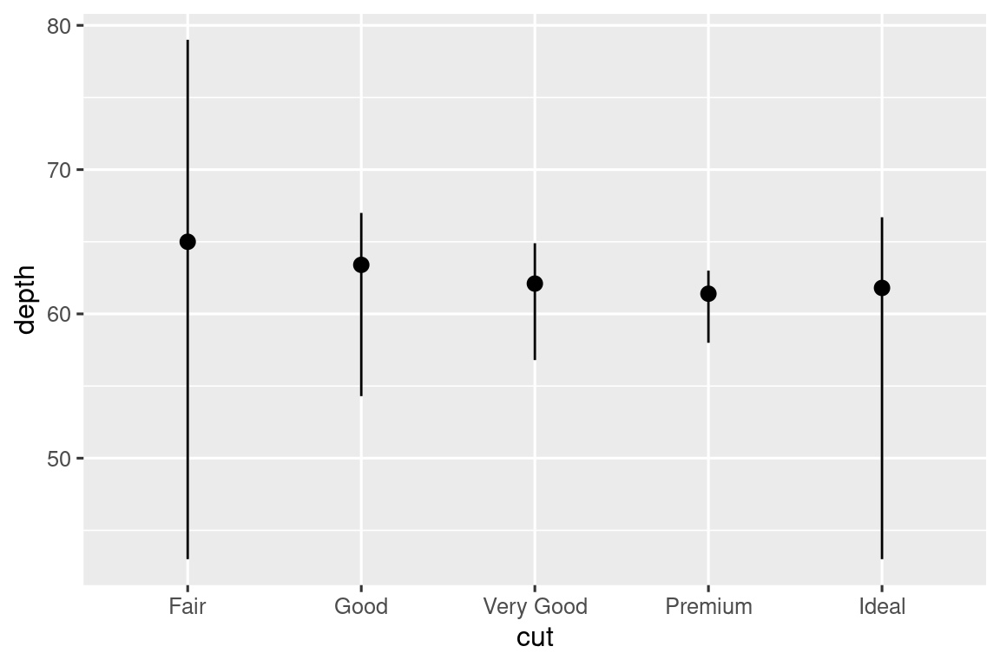
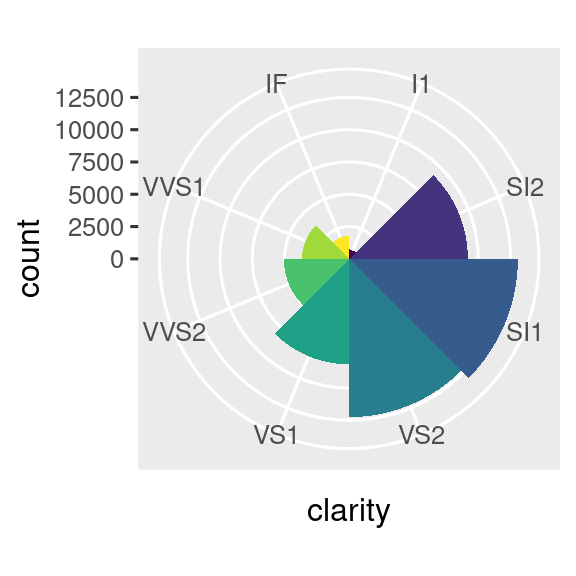

9 Επίπεδα
9.1 Εισαγωγή
Στο Κεφάλαιο 1, μάθατε πολλά περισσότερα από το πώς να δημιουργείτε γραφήματα διασποράς, ραβδογράμματα και θηκογράμματα. Μάθατε μία βάση που μπορείτε να χρησιμοποιήσετε για να φτιάξετε οποιονδήποτε τύπο γραφήματος με το πακέτο ggplot2.
Σε αυτό το κεφάλαιο, θα επεκταθείτε χρησιμοποιώντας αυτή τη βάση καθώς μαθαίνετε για την πολυεπίπεδη γραμματική των γραφικών. Θα ξεκινήσουμε με μία εμβάθυνση στα αισθητικά στοιχεία, τα γεωμετρικά αντικείμενα και τις όψεις (facets). Στη συνέχεια, θα μάθετε για τους στατιστικούς μετασχηματισμούς που κάνει το πακέτο ggplot2 στο παρασκήνιο κατά τη δημιουργία ενός διαγράμματος. Αυτοί οι μετασχηματισμοί χρησιμοποιούνται για τον υπολογισμό νέων τιμών προς οπτικοποίηση, όπως τα ύψη των ράβδων σε ένα ραβδόγραμμα ή οι διάμεσοι σε ένα θηκόγραμμα. Θα μάθετε επίσης για τις προσαρμογές θέσεων, οι οποίες μεταβάλλουν τον τρόπο εμφάνισης των γεωμετρικών αντικειμένων (geoms) στα διαγράμματά σας. Τέλος, θα παρουσιάσουμε εν συντομία τα συστήματα συντεταγμένων.
9.1.1 Προαπαιτούμενα
Αυτό το κεφάλαιο εστιάζει στο πακέτο ggplot2. Για να αποκτήσετε πρόσβαση στα δεδομένα, τις σελίδες βοήθειας και τις συναρτήσεις που χρησιμοποιούνται σε αυτό το κεφάλαιο, φορτώστε το tidyverse εκτελώντας αυτόν τον κώδικα:
9.2 Αισθητικά στοιχεία
“Η μεγαλύτερη αξία μιας εικόνας είναι όταν μας αναγκάζει να παρατηρήσουμε αυτό που δεν περιμέναμε ποτέ να δούμε.” — John Tukey
Θυμηθείτε ότι το πλαίσιο δεδομένων mpg που συμπεριλαμβάνεται στο πακέτο ggplot2 περιέχει 234 παρατηρήσεις (γραμμές) για 38 μοντέλα αυτοκινήτων.
mpg
#> # A tibble: 234 × 11
#> manufacturer model displ year cyl trans drv cty hwy fl
#> <chr> <chr> <dbl> <int> <int> <chr> <chr> <int> <int> <chr>
#> 1 audi a4 1.8 1999 4 auto(l5) f 18 29 p
#> 2 audi a4 1.8 1999 4 manual(m5) f 21 29 p
#> 3 audi a4 2 2008 4 manual(m6) f 20 31 p
#> 4 audi a4 2 2008 4 auto(av) f 21 30 p
#> 5 audi a4 2.8 1999 6 auto(l5) f 16 26 p
#> 6 audi a4 2.8 1999 6 manual(m5) f 18 26 p
#> # ℹ 228 more rows
#> # ℹ 1 more variable: class <chr>Μερικές από τις μεταβλητές που περιέχονται στο mpg είναι:
displ: Μέγεθος κινητήρα αυτοκινήτου, σε λίτρα. Μία αριθμητική μεταβλητή.hwy: Η απόδοση καυσίμου ενός αυτοκινήτου στον αυτοκινητόδρομο, σε μίλια ανά γαλόνι (mpg). Ένα αυτοκίνητο με χαμηλή απόδοση καυσίμου καταναλώνει περισσότερο καύσιμο από ένα αυτοκίνητο με υψηλή απόδοση καυσίμου όταν διανύει την ίδια απόσταση. Μία αριθμητική μεταβλητή.class: Τύπος αυτοκινήτου. Μία κατηγορηματική μεταβλητή.
Ας ξεκινήσουμε οπτικοποιώντας τη σχέση μεταξύ displ και hwy για διάφορες κατηγορίες (class) αυτοκινήτων . Μπορούμε να το κάνουμε αυτό με ένα διάγραμμα διασποράς όπου οι αριθμητικές μεταβλητές αντιστοιχίζονται στα αισθητικά στοιχεία x και y και η κατηγορική μεταβλητή αντιστοιχίζεται σε ένα αισθητικό στοιχείο όπως το χρώμα (color) ή σχήμα (shape).
# Left
ggplot(mpg, aes(x = displ, y = hwy, color = class)) +
geom_point()
# Right
ggplot(mpg, aes(x = displ, y = hwy, shape = class)) +
geom_point()
#> Warning: The shape palette can deal with a maximum of 6 discrete values because more
#> than 6 becomes difficult to discriminate
#> ℹ you have requested 7 values. Consider specifying shapes manually if you
#> need that many have them.
#> Warning: Removed 62 rows containing missing values or values outside the scale range
#> (`geom_point()`).![Δύο διαγράμματα διασποράς το ένα δίπλα στο άλλο, και τα δύο απεικονίζουν την απόδοση καυσίμου σε αυτοκινητόδρομο σε σχέση με το μέγεθος του κινητήρα των αυτοκινήτων και δείχνουν μία αρνητική συσχέτιση. Στο διάγραμμα στα αριστερά η κλάση αντιστοιχίζεται στην αισθητική των χρωμάτων, με αποτέλεσμα διαφορετικά χρώματα για κάθε τάξη. Στο διάγραμμα στη δεξιά κλάση τοποθετείται η αισθητική του σχήματος, με αποτέλεσμα να σχηματίζονται διαφορετικά σχήματα χαρακτήρων για κάθε κατηγορία, εκτός από το suv. Κάθε γραφική παράσταση συνοδεύεται από ένα υπόμνημα που δείχνει την αντιστοίχιση μεταξύ του χρώματος ή του σχήματος και των επιπέδων της μεταβλητής τύπου αυτοκινήτου (class).](layers_files/figure-html/unnamed-chunk-4-1.png)
![Δύο διαγράμματα διασποράς το ένα δίπλα στο άλλο, και τα δύο απεικονίζουν την απόδοση καυσίμου σε αυτοκινητόδρομο σε σχέση με το μέγεθος του κινητήρα των αυτοκινήτων και δείχνουν μία αρνητική συσχέτιση. Στο διάγραμμα στα αριστερά η κλάση αντιστοιχίζεται στην αισθητική των χρωμάτων, με αποτέλεσμα διαφορετικά χρώματα για κάθε τάξη. Στο διάγραμμα στη δεξιά κλάση τοποθετείται η αισθητική του σχήματος, με αποτέλεσμα να σχηματίζονται διαφορετικά σχήματα χαρακτήρων για κάθε κατηγορία, εκτός από το suv. Κάθε γραφική παράσταση συνοδεύεται από ένα υπόμνημα που δείχνει την αντιστοίχιση μεταξύ του χρώματος ή του σχήματος και των επιπέδων της μεταβλητής τύπου αυτοκινήτου (class).](layers_files/figure-html/unnamed-chunk-4-2.png)
Όταν η μεταβλητή class ορίζεται στο στοιχείο shape, λαμβάνουμε δύο προειδοποιήσεις:
1: The shape palette can deal with a maximum of 6 discrete values because more than 6 becomes difficult to discriminate; you have 7. Consider specifying shapes manually if you must have them.
2: Removed 62 rows containing missing values (
geom_point()).
Δεδομένου ότι το πακέτο ggplot2 χρησιμοποιεί μόνο έξι σχήματα τη φορά, από προεπιλογή, οι πρόσθετες ομάδες δεν θα οπτικοποιηθούν όσο χρησιμοποιείτε το αισθητικό στοιχείο του σχήματος (shape). Η δεύτερη προειδοποίηση είναι σχετική με τη προηγούμενη – υπάρχουν 62 SUV στα δεδομένων και δεν οπτικοποιούνται.
Ομοίως, μπορούμε να ορίσουμε την μεταβλητή class στα αισθητικά στοιχεία size ή alpha, που ελέγχουν το σχήμα και τη διαφάνεια των σημείων, αντίστοιχα.
# Left
ggplot(mpg, aes(x = displ, y = hwy, size = class)) +
geom_point()
#> Warning: Using size for a discrete variable is not advised.
# Right
ggplot(mpg, aes(x = displ, y = hwy, alpha = class)) +
geom_point()
#> Warning: Using alpha for a discrete variable is not advised.![Δύο διαγράμματα διασποράς το ένα δίπλα στο άλλο, και τα δύο απεικονίζουν την απόδοση καυσίμου σε αυτοκινητόδρομο σε σχέση με το μέγεθος του κινητήρα των αυτοκινήτων και δείχνουν μία αρνητική συσχέτιση. Στο διάγραμμα στα αριστερά η μεταβλητή class ορίζεται στο αισθητικό στοιχείο size, με αποτέλεσμα την οπτικοποίηση διαφορετικών μεγεθών για κάθε τιμή της μεταβλητής class. Στο διάγραμμα στα δεξιά, η τιμή της μεταβλητής class ορίζεται στο αισθητικό στοιχείο alpha, με αποτέλεσμα διαφορετικά επίπεδα τιμών alpha (διαφάνειας) για κάθε τάξη. Κάθε γραφική παράσταση συνοδεύεται από ένα υπόμνημα που δείχνει την αντιστοίχιση μεταξύ μεγέθους (size) ή επιπέδου alpha και επιπέδων της μεταβλητής class.](layers_files/figure-html/unnamed-chunk-5-1.png)
![Δύο διαγράμματα διασποράς το ένα δίπλα στο άλλο, και τα δύο απεικονίζουν την απόδοση καυσίμου σε αυτοκινητόδρομο σε σχέση με το μέγεθος του κινητήρα των αυτοκινήτων και δείχνουν μία αρνητική συσχέτιση. Στο διάγραμμα στα αριστερά η μεταβλητή class ορίζεται στο αισθητικό στοιχείο size, με αποτέλεσμα την οπτικοποίηση διαφορετικών μεγεθών για κάθε τιμή της μεταβλητής class. Στο διάγραμμα στα δεξιά, η τιμή της μεταβλητής class ορίζεται στο αισθητικό στοιχείο alpha, με αποτέλεσμα διαφορετικά επίπεδα τιμών alpha (διαφάνειας) για κάθε τάξη. Κάθε γραφική παράσταση συνοδεύεται από ένα υπόμνημα που δείχνει την αντιστοίχιση μεταξύ μεγέθους (size) ή επιπέδου alpha και επιπέδων της μεταβλητής class.](layers_files/figure-html/unnamed-chunk-5-2.png)
Και οι δύο παραπάνω επιλογές θα επιστρέψουν προειδοποιήσεις (warnings):
Η χρήση του alpha για μία διακριτή μεταβλητή δεν συνιστάται.
Η αντιστοίχιση μιας μη διατεταγμένης διακριτής (κατηγορικής) μεταβλητής (class) σε μία διατεταγμένη αισθητική (size ή alpha) γενικά δεν είναι καλή ιδέα επειδή υπονοεί μία κατάταξη που στην πραγματικότητα δεν υπάρχει.
Απο τη στιγμή που αντιστοιχίσετε ένα αισθητικό στοιχείο, το πακέτο ggplot2 αναλαμβάνει τα υπόλοιπα. Επιλέγει μία λογική κλίμακα για χρήση με τα αισθητικά στοιχεία και δημιουργεί έναν υπόμνημα που εξηγεί την αντιστοίχιση μεταξύ επιπέδων και τιμών. Για τα αισθητικά στοιχεία των x και y, το πακέτο ggplot2 δεν δημιουργεί υπόμνημα, αλλά δημιουργεί μία γραμμή άξονα με σημάδια και μία ετικέτα. Η γραμμή άξονα παρέχει τις ίδιες πληροφορίες με ένα υπόμνημα; εξηγεί την αντιστοίχιση μεταξύ τοποθεσιών και τιμών.
Μπορείτε επίσης να ορίσετε τις οπτικές ιδιότητες του geom σας με μη αυτόματο τρόπο, ως όρισμα της συνάρτησης geom (εκτός του aes()), αντί να βασίζεστε σε μία αντιστοίχιση μεταβλητής για να προσδιορίσετε την εμφάνιση. Για παράδειγμα, μπορούμε να κάνουμε όλα τα σημεία στο διάγραμμα μπλε:
ggplot(mpg, aes(x = displ, y = hwy)) +
geom_point(color = "blue")
Εδώ, το χρώμα δεν προσδίδει πληροφορίες για κάποια μεταβλητή, αλλάζει μόνο την εμφάνιση του διαγράμματος. Θα χρειαστεί να επιλέξετε μία τιμή που έχει νόημα για αυτό το αισθητικό στοιχείο:
- Το όνομα ενός χρώματος ως συμβολοσειρά, π.χ.,
color = "blue" - Το μέγεθος ενός σημείου σε mm, π.χ.
size = 1 - Το σχήμα ενός σημείου ως αριθμός, π.χ.
shape = 1, όπως φαίνεται στο Σχήμα 9.1.
![Αντιστοιχίσεις μεταξύ σχημάτων και αριθμών: 0 - τετράγωνο, 1 - κύκλος, 2 - τρίγωνο με κορυφή επάνω, 3 - σύμβολο "+", 4 - σύμβολο "x", 5 - διαμάντι, 6 - τρίγωνο με κορυφή κάτω, 7 - τετράγωνο με σύμβολο "x", 8 - αστερίσκος, 9 - διαμάντι με σύμβολο "+", 10 - κύκλος με σύμβολο "+", 11 - τρίγωνο με κορυφή πάνω και κάτω, 12 - τετράγωνο με σύμβολο "+", 13 - κύκλος με σύμβολο "x", 14 - τετράγωνο και τρίγωνο με κορυφή κάτω, 15 - τετράγωνο με γέμισμα, 16 - κύκλος με γέμισμα, 17 - τρίγωνο με γέμισμα κορυφή πάνω, 18 - διαμάντι με γέμισμα, 19 - solid circle, 20 - σημείο (bullet) (μικρότερος κύκλος), 21 - κύκλος με μπλε γέμισμα, 22 - τετράγωνο με μπλε γέμισμα, 23 - διαμάντι με μπλε γέμισμα, 24 - τρίγωνο με μπλε γέμισμα κορυφή πάνω, 25 - τρίγωνο με μπλε γέμισμα κορυφή κάτω](layers_files/figure-html/fig-shapes-1.png)
color και fill. Τα κενά σχήματα (0–14) έχουν ένα περίγραμμα που καθορίζεται από το color. Τα συμπαγή σχήματα (15–20) είναι γεμισμένα με color. Τα γεμισμένα σχήματα (21–24) έχουν περίγραμμα color και γεμίζονται με fill. Τα σχήματα είναι διατεταγμένα ώστε να διατηρούν παρόμοια σχήματα το ένα δίπλα στο άλλο.Μέχρι στιγμής έχουμε συζητήσει για τα αισθητικά στοιχεία που μπορούμε να ορίσουμε σε ένα διάγραμμα διασποράς, όταν χρησιμοποιούμε ένα geom σημείων (geom point). Μπορείτε να μάθετε περισσότερα για όλες τις πιθανές επιλογές σχετικές με τα αισθητικά στοιχεία στη διεύθυνση https://ggplot2.tidyverse.org/articles/ggplot2-specs.html.
Τα αισθητικά στοιχεία που μπορείτε να χρησιμοποιήσετε για ένα διάγραμμα εξαρτώνται από το συγκεκριμένο geom που χρησιμοποιείτε για να αναπαραστήσετε δεδομένα. Αναλύουμε περισσότερο τα geoms στην επόμενη ενότητα.
9.2.1 Ασκήσεις
Δημιουργήστε ένα διάγραμμα διασποράς της μεταβλητής
hwyέναντι τηςdisplόπου τα σημεία είναι τρίγωνα γεμισμένα με ροζ χρώμα.-
Γιατί ο παρακάτω κώδικας δεν έχει ως αποτέλεσμα ένα διάγραμμα με μπλε σημεία;
ggplot(mpg) + geom_point(aes(x = displ, y = hwy, color = "blue")) Τι κάνει το αισθητικό στοιχείο
stroke; Με τι σχήματα λειτουργεί; (Συμβουλή: χρησιμοποιήστε το?geom_point)Τι συμβαίνει εάν αντιστοιχίσετε ένα αισθητικό στοιχείο σε κάτι διαφορετικό από ένα όνομα μεταβλητής, όπως
aes(color = displ < 5); Σημείωση, θα χρειαστεί επίσης να καθορίσετε τιμές για τα x και y.
9.3 Γεωμετρικά αντικείμενα
Πόσο όμοια είναι αυτά τα δύο διαγράμματα;
Και τα δύο διαγράμματα περιέχουν την ίδια μεταβλητή x, την ίδια μεταβλητή y, και τα δύο περιγράφουν τα ίδια δεδομένα. Αλλά δεν είναι πανομοιότυπα. Κάθε διάγραμμα χρησιμοποιεί ένα διαφορετικό γεωμετρικό αντικείμενο, το geom, για να αναπαραστήσει τα δεδομένα. Το διάγραμμα στα αριστερά χρησιμοποιεί το στοιχείο geom και η γραφική παράσταση στα δεξιά χρησιμοποιεί το smooth geom, μία ομαλοποιημένη γραμμή προσαρμοσμένη στα δεδομένα.
Για να αλλάξετε το geom στο διάγραμμα σας, αλλάξτε τη συνάρτηση geom που προσθέτετε στη ggplot(). Για παράδειγμα, για να φτιάξετε τα παραπάνω διαγράμματα, μπορείτε να χρησιμοποιήσετε τον ακόλουθο κώδικα:
# Αριστερά
ggplot(mpg, aes(x = displ, y = hwy)) +
geom_point()
# Δεξιά
ggplot(mpg, aes(x = displ, y = hwy)) +
geom_smooth()
#> `geom_smooth()` using method = 'loess' and formula = 'y ~ x'Κάθε λειτουργία του geom στο πακέτο ggplot2 λαμβάνει ένα όρισμα mapping που είτε ορίζεται τοπικά στο geom είτε καθολικά στο επίπεδο της ggplot(). Ωστόσο, κάθε αισθητικό στοιχείο δεν λειτουργεί με κάθε geom. Θα μπορούσατε να ορίσετε το σχήμα ενός σημείου, αλλά δεν θα μπορούσατε να ορίσετε το “σχήμα” μιας γραμμής (linetype). Εάν το προσπαθήσετε, το πακέτο ggplot2 θα το αγνοήσει χωρίς κάποια προειδοποίηση. Από την άλλη πλευρά, θα μπορούσατε να ορίσετε τον τύπο μιας γραμμής. Η geom_smooth() θα σχεδιάσει μία διαφορετική γραμμή, με διαφορετικό τύπο, για κάθε μοναδική τιμή της μεταβλητής που αντιστοιχίζετε σε αυτό τον τύπο.
# Αριστερά
ggplot(mpg, aes(x = displ, y = hwy, shape = drv)) +
geom_smooth()
# Δεξιά
ggplot(mpg, aes(x = displ, y = hwy, linetype = drv)) +
geom_smooth()![Δύο διαγράμματα απόδοσης καυσίμου αυτοκινητόδρομου σε σχέση με το μέγεθος του κινητήρα των αυτοκινήτων. Τα δεδομένα αντιπροσωπεύονται με ομαλοποιημένες καμπύλες. Αριστερά, τρεις ομαλοποιημένες καμπύλες, όλες με τον ίδιο τύπο γραμμής. Στα δεξιά, τρεις ομαλοποιημένες καμπύλες με διαφορετικούς τύπους γραμμών (συμπαγής, διακεκομμένη ή μεγάλη διακεκομμένη) για κάθε τύπο συστήματος μετάδοσης κίνησης. Και στα δύο διαγράμματα, εμφανίζονται επίσης διαστήματα εμπιστοσύνης γύρω από τις ομαλοποιημένες καμπύλες.](layers_files/figure-html/unnamed-chunk-11-1.png)
![Δύο διαγράμματα απόδοσης καυσίμου αυτοκινητόδρομου σε σχέση με το μέγεθος του κινητήρα των αυτοκινήτων. Τα δεδομένα αντιπροσωπεύονται με ομαλοποιημένες καμπύλες. Αριστερά, τρεις ομαλοποιημένες καμπύλες, όλες με τον ίδιο τύπο γραμμής. Στα δεξιά, τρεις ομαλοποιημένες καμπύλες με διαφορετικούς τύπους γραμμών (συμπαγής, διακεκομμένη ή μεγάλη διακεκομμένη) για κάθε τύπο συστήματος μετάδοσης κίνησης. Και στα δύο διαγράμματα, εμφανίζονται επίσης διαστήματα εμπιστοσύνης γύρω από τις ομαλοποιημένες καμπύλες.](layers_files/figure-html/unnamed-chunk-11-2.png)
Εδώ, η geom_smooth() χωρίζει τα αυτοκίνητα σε τρεις γραμμές με βάση την αντίστοιχη τιμή τους στη μεταβλητή drv, η οποία περιγράφει την κίνηση ενός αυτοκινήτου. Μία γραμμή περιγράφει όλα τα σημεία που έχουν τιμή 4, μία περιγράφει όλα τα σημεία που έχουν τιμή f και μία περιγράφει όλα τα σημεία που έχουν τιμή r. Εδώ, το 4 σημαίνει τετρακίνηση, το f κίνηση στους μπροστινούς τροχούς και το r κίνηση στους πίσω τροχούς.
Σε περίπτωση που αυτό φαίνεται περίεργο, μπορούμε να το κάνουμε πιο σαφές τοποθετώντας τις γραμμές πάνω από τα ανεπεξέργαστα δεδομένα και μετά χρωματίζοντάς τα σύμφωνα με τη drv.
ggplot(mpg, aes(x = displ, y = hwy, color = drv)) +
geom_point() +
geom_smooth(aes(linetype = drv))Παρατηρήστε ότι το διάγραμμα περιέχει δύο στοιχεία geom στο ίδιο γράφημα.
Πολλά geoms, όπως η geom_smooth(), χρησιμοποιούν ένα μόνο γεωμετρικό αντικείμενο για να προβάλλουν πολλές γραμμές δεδομένων. Για αυτά τα geoms, μπορείτε να ορίσετε το αισθητικό στοιχείο group σε μία κατηγορική μεταβλητή έτσι ώστε να σχεδιάσετε πολλά αντικείμενα. Η ggplot2 θα σχεδιάσει ένα ξεχωριστό αντικείμενο για κάθε μοναδική τιμή της μεταβλητής ομαδοποίησης. Στην πράξη, το πακέτο ggplot2 θα ομαδοποιεί αυτόματα τα δεδομένα για αυτά τα geoms κάθε φορά που χρησιμοποιείτε ένα αισθητικό στοιχείο σε μία διακριτή μεταβλητή (όπως στο παράδειγμα με τη linetype). Είναι βολικό να βασίζεστε σε αυτό το χαρακτηριστικό, καθώς το στοιχείο group από μόνο του δεν προσθέτει κάποιο υπόμνημα ή διακριτά χαρακτηριστικά στα geoms.
# Αριστερά
ggplot(mpg, aes(x = displ, y = hwy)) +
geom_smooth()
# Μέση
ggplot(mpg, aes(x = displ, y = hwy)) +
geom_smooth(aes(group = drv))
# Δεξιά
ggplot(mpg, aes(x = displ, y = hwy)) +
geom_smooth(aes(color = drv), show.legend = FALSE)![Τρία διαγράμματα, το καθένα με απόδοση καυσίμου σε αυτοκινητόδρομο στον άξονα y και μέγεθος κινητήρα των αυτοκινήτων, όπου τα δεδομένα αντιπροσωπεύονται από μία ομαλοποιημένη καμπύλη. Το πρώτο διάγραμμα έχει μόνο αυτές τις δύο μεταβλητές, το κεντρικό διάγραμμα έχει τρεις ξεχωριστές ομαλοποιημένες καμπύλες για κάθε επίπεδο συστήματος μετάδοσης κίνησης και το διάγραμμα στα δεξιά όχι μόνο έχει τις ίδιες τρεις ξεχωριστές ομαλοποιημένες καμπύλες για κάθε επίπεδο συστήματος μετάδοσης κίνησης, αλλά αυτές οι καμπύλες απεικονίζονται σε διαφορετικά χρώματα, με ένα υπόμημα που εξηγεί ποιο χρώμα αντιστοιχεί σε ποιο επίπεδο. Εμφανίζονται επίσης διαστήματα εμπιστοσύνης γύρω από τις ομαλοποιημένες καμπύλες.](layers_files/figure-html/unnamed-chunk-13-1.png)
![Τρία διαγράμματα, το καθένα με απόδοση καυσίμου σε αυτοκινητόδρομο στον άξονα y και μέγεθος κινητήρα των αυτοκινήτων, όπου τα δεδομένα αντιπροσωπεύονται από μία ομαλοποιημένη καμπύλη. Το πρώτο διάγραμμα έχει μόνο αυτές τις δύο μεταβλητές, το κεντρικό διάγραμμα έχει τρεις ξεχωριστές ομαλοποιημένες καμπύλες για κάθε επίπεδο συστήματος μετάδοσης κίνησης και το διάγραμμα στα δεξιά όχι μόνο έχει τις ίδιες τρεις ξεχωριστές ομαλοποιημένες καμπύλες για κάθε επίπεδο συστήματος μετάδοσης κίνησης, αλλά αυτές οι καμπύλες απεικονίζονται σε διαφορετικά χρώματα, με ένα υπόμημα που εξηγεί ποιο χρώμα αντιστοιχεί σε ποιο επίπεδο. Εμφανίζονται επίσης διαστήματα εμπιστοσύνης γύρω από τις ομαλοποιημένες καμπύλες.](layers_files/figure-html/unnamed-chunk-13-2.png)
![Τρία διαγράμματα, το καθένα με απόδοση καυσίμου σε αυτοκινητόδρομο στον άξονα y και μέγεθος κινητήρα των αυτοκινήτων, όπου τα δεδομένα αντιπροσωπεύονται από μία ομαλοποιημένη καμπύλη. Το πρώτο διάγραμμα έχει μόνο αυτές τις δύο μεταβλητές, το κεντρικό διάγραμμα έχει τρεις ξεχωριστές ομαλοποιημένες καμπύλες για κάθε επίπεδο συστήματος μετάδοσης κίνησης και το διάγραμμα στα δεξιά όχι μόνο έχει τις ίδιες τρεις ξεχωριστές ομαλοποιημένες καμπύλες για κάθε επίπεδο συστήματος μετάδοσης κίνησης, αλλά αυτές οι καμπύλες απεικονίζονται σε διαφορετικά χρώματα, με ένα υπόμημα που εξηγεί ποιο χρώμα αντιστοιχεί σε ποιο επίπεδο. Εμφανίζονται επίσης διαστήματα εμπιστοσύνης γύρω από τις ομαλοποιημένες καμπύλες.](layers_files/figure-html/unnamed-chunk-13-3.png)
Εάν τοποθετήσετε ορίσματα σε ένα στοιχείο geom, το πακέτο ggplot2 θα τα αντιμετωπίσει ως τοπικά ορίσματα για το συγκεκριμένο επίπεδο. Θα τα χρησιμοποιήσει για να επεκτείνει ή να αντικαταστήσει τα γενικά ορίσματα μόνο για αυτό το επίπεδο. Αυτό καθιστά δυνατή την εμφάνιση διαφορετικών αισθητικών στοιχείων σε διαφορετικά επίπεδα.
ggplot(mpg, aes(x = displ, y = hwy)) +
geom_point(aes(color = class)) +
geom_smooth()Μπορείτε να χρησιμοποιήσετε την ίδια μεθοδολογία για να ορίσετε διαφορετικά δεδομένα στο όρισμα data για κάθε επίπεδο. Εδώ, χρησιμοποιούμε κόκκινα σημεία καθώς και ανοιχτούς κύκλους για να τονίσουμε τα διθέσια αυτοκίνητα. Ο ορισμός των δεδομένων στη geom_point() αντικαθιστά το γενικό όρισμα δεδομένων στη ggplot() μόνο για αυτό το επίπεδο.
ggplot(mpg, aes(x = displ, y = hwy)) +
geom_point() +
geom_point(
data = mpg |> filter(class == "2seater"),
color = "red"
) +
geom_point(
data = mpg |> filter(class == "2seater"),
shape = "circle open", size = 3, color = "red"
)Τα geoms είναι τα δομικά στοιχεία της ggplot2. Μπορείτε να αλλάξετε εντελώς την εμφάνιση του διαγράμματός σας αλλάζοντας τα αντίστοιχα geoms καθώς διαφορετικοί τύποι μπορούν να αποκαλύψουν διαφορετικά χαρακτηριστικά των δεδομένων σας. Για παράδειγμα, το ιστόγραμμα και το διάγραμμα πυκνότητας παρακάτω αποκαλύπτουν ότι η κατανομή των χιλιομέτρων σε αυτοκινητόδρομο εμφανίζει δύο κορυφές και θετική στρέβλωση, ενώ το θηκόγραμμα αποκαλύπτει δύο πιθανές ακραίες τιμές.
# Αριστερά
ggplot(mpg, aes(x = hwy)) +
geom_histogram(binwidth = 2)
# Μέση
ggplot(mpg, aes(x = hwy)) +
geom_density()
# Δεξιά
ggplot(mpg, aes(x = hwy)) +
geom_boxplot()
Η ggplot2 παρέχει περισσότερα από 40 στοιχεία geom. Αυτά όμως δεν καλύπτουν κάθε πιθανό διάγραμμα που θα μπορούσε κάποιος να κάνει. Εάν χρειάζεστε διαφορετικά geoms, συνιστούμε να εξετάσετε πρώτα τα πακέτα επεκτάσεων για να δείτε εάν κάποιος άλλος το έχει ήδη εφαρμόσει (βλέπε https://exts.ggplot2.tidyverse.org/gallery/ για ένα δείγμα). Για παράδειγμα, το πακέτο ggridges (https://wilkelab.org/ggridges) είναι χρήσιμο για τη δημιουργία διαγραμμάτων κορυφογραμμής (ridgeline), για την οπτικοποίηση της πυκνότητας μιας αριθμητικής μεταβλητής για διαφορετικά επίπεδα μιας άλλης κατηγορικής μεταβλητής. Στο παρακάτω διάγραμμα όχι μόνο χρησιμοποιήσαμε ένα νέο geom (geom_density_ridges()), αλλά αντιστοιχίσαμε επίσης την ίδια μεταβλητή σε πολλαπλά αισθητικά στοιχεία (drv στη y, fill, και color) και ορίσαμε ένα αισθητικό στοιχείο (alpha = 0.5) για να κάνουμε τις καμπύλες πυκνότητας διαφανείς.
library(ggridges)
ggplot(mpg, aes(x = hwy, y = drv, fill = drv, color = drv)) +
geom_density_ridges(alpha = 0.5, show.legend = FALSE)
#> Picking joint bandwidth of 1.28Το καλύτερο μέρος για να έχετε μία ολοκληρωμένη εικόνα όλων των geoms που προσφέρει το πακέτο ggplot2, καθώς και όλων των λειτουργιών του πακέτου, είναι η σελίδα: https://ggplot2.tidyverse.org/reference. Για να μάθετε περισσότερα σχετικά με οποιοδήποτε μεμονωμένο geom, χρησιμοποιήστε την εντολή βοήθειας (π.χ. ?geom_smooth).
9.3.1 Ασκήσεις
Ποιο geom θα χρησιμοποιούσατε για να σχεδιάσετε ένα διάγραμμα γραμμών; Ένα θηκόγραμμα; Ένα Ιστόγραμμα; Ένα διάγραμμα περιοχής;
-
Νωρίτερα σε αυτό το κεφάλαιο χρησιμοποιήσαμε το
show.legendχωρίς να το εξηγήσουμε:ggplot(mpg, aes(x = displ, y = hwy)) + geom_smooth(aes(color = drv), show.legend = FALSE)Τι κάνει εδώ το “show.legend = FALSE”; Τι θα συμβεί αν το αφαιρέσετε; Γιατί πιστεύετε ότι το χρησιμοποιήσαμε νωρίτερα;
Τι κάνει το όρισμα
seστηgeom_smooth();-
Γράψτε ξανά τον κώδικα R που είναι απαραίτητος για τη δημιουργία των παρακάτω γραφημάτων. Σημειώστε ότι οπουδήποτε στο διάγραμμα χρησιμοποιείται μία κατηγορική μεταβλητή, είναι η
drv.![Υπάρχουν έξι διαγράμματα διασποράς σε αυτό το σχήμα, διατεταγμένα σε ένα πλέγμα 3x2. Σε όλα τα γραφήματα η απόδοση καυσίμου των αυτοκινήτων σε αυτοκινητόδρομους είναι στον άξονα y και το μέγεθος του κινητήρα είναι στον άξονα x. Το πρώτο διάγραμμα δείχνει όλα τα σημεία με μαύρο χρώμα με μία ομαλοποιημένη καμπύλη να επικαλύπτεται πάνω τους. Στο δεύτερο διάγραμμα τα σημεία είναι επίσης όλα μαύρα, με ξεχωριστές ομαλοποιημένες καμπύλες που επικαλύπτονται για κάθε επίπεδο κίνησης. Στο τρίτο διάγραμμα, τα σημεία και οι ομαλοποημένες καμπύλες αναπαρίστανται με διαφορετικά χρώματα για κάθε επίπεδο κίνησης. Στο τέταρτο διάγραμμα τα σημεία αναπαρίστανται με διαφορετικά χρώματα για κάθε επίπεδο του συστήματος μετάδοσης κίνησης, αλλά υπάρχει μόνο μία ενιαία ομαλοποημένη γραμμή προσαρμοσμένη σε όλα τα δεδομένα. Στο πέμπτο διάγραμμα, τα σημεία αναπαρίστανται με διαφορετικά χρώματα για κάθε επίπεδο του συστήματος μετάδοσης κίνησης και μία ξεχωριστή ομαλοποημένη καμπύλη με διαφορετικούς τύπους γραμμής προσαρμόζεται σε κάθε επίπεδο συστήματος μετάδοσης κίνησης. Και τέλος σε ένα έκτο διάγραμμα τα σημεία αναπαρίστανται με διαφορετικά χρώματα για κάθε επίπεδο κίνησης και έχουν ένα παχύ λευκό περίγραμμα.](layers_files/figure-html/unnamed-chunk-19-1.png)
![Υπάρχουν έξι διαγράμματα διασποράς σε αυτό το σχήμα, διατεταγμένα σε ένα πλέγμα 3x2. Σε όλα τα γραφήματα η απόδοση καυσίμου των αυτοκινήτων σε αυτοκινητόδρομους είναι στον άξονα y και το μέγεθος του κινητήρα είναι στον άξονα x. Το πρώτο διάγραμμα δείχνει όλα τα σημεία με μαύρο χρώμα με μία ομαλοποιημένη καμπύλη να επικαλύπτεται πάνω τους. Στο δεύτερο διάγραμμα τα σημεία είναι επίσης όλα μαύρα, με ξεχωριστές ομαλοποιημένες καμπύλες που επικαλύπτονται για κάθε επίπεδο κίνησης. Στο τρίτο διάγραμμα, τα σημεία και οι ομαλοποημένες καμπύλες αναπαρίστανται με διαφορετικά χρώματα για κάθε επίπεδο κίνησης. Στο τέταρτο διάγραμμα τα σημεία αναπαρίστανται με διαφορετικά χρώματα για κάθε επίπεδο του συστήματος μετάδοσης κίνησης, αλλά υπάρχει μόνο μία ενιαία ομαλοποημένη γραμμή προσαρμοσμένη σε όλα τα δεδομένα. Στο πέμπτο διάγραμμα, τα σημεία αναπαρίστανται με διαφορετικά χρώματα για κάθε επίπεδο του συστήματος μετάδοσης κίνησης και μία ξεχωριστή ομαλοποημένη καμπύλη με διαφορετικούς τύπους γραμμής προσαρμόζεται σε κάθε επίπεδο συστήματος μετάδοσης κίνησης. Και τέλος σε ένα έκτο διάγραμμα τα σημεία αναπαρίστανται με διαφορετικά χρώματα για κάθε επίπεδο κίνησης και έχουν ένα παχύ λευκό περίγραμμα.](layers_files/figure-html/unnamed-chunk-19-2.png)
![Υπάρχουν έξι διαγράμματα διασποράς σε αυτό το σχήμα, διατεταγμένα σε ένα πλέγμα 3x2. Σε όλα τα γραφήματα η απόδοση καυσίμου των αυτοκινήτων σε αυτοκινητόδρομους είναι στον άξονα y και το μέγεθος του κινητήρα είναι στον άξονα x. Το πρώτο διάγραμμα δείχνει όλα τα σημεία με μαύρο χρώμα με μία ομαλοποιημένη καμπύλη να επικαλύπτεται πάνω τους. Στο δεύτερο διάγραμμα τα σημεία είναι επίσης όλα μαύρα, με ξεχωριστές ομαλοποιημένες καμπύλες που επικαλύπτονται για κάθε επίπεδο κίνησης. Στο τρίτο διάγραμμα, τα σημεία και οι ομαλοποημένες καμπύλες αναπαρίστανται με διαφορετικά χρώματα για κάθε επίπεδο κίνησης. Στο τέταρτο διάγραμμα τα σημεία αναπαρίστανται με διαφορετικά χρώματα για κάθε επίπεδο του συστήματος μετάδοσης κίνησης, αλλά υπάρχει μόνο μία ενιαία ομαλοποημένη γραμμή προσαρμοσμένη σε όλα τα δεδομένα. Στο πέμπτο διάγραμμα, τα σημεία αναπαρίστανται με διαφορετικά χρώματα για κάθε επίπεδο του συστήματος μετάδοσης κίνησης και μία ξεχωριστή ομαλοποημένη καμπύλη με διαφορετικούς τύπους γραμμής προσαρμόζεται σε κάθε επίπεδο συστήματος μετάδοσης κίνησης. Και τέλος σε ένα έκτο διάγραμμα τα σημεία αναπαρίστανται με διαφορετικά χρώματα για κάθε επίπεδο κίνησης και έχουν ένα παχύ λευκό περίγραμμα.](layers_files/figure-html/unnamed-chunk-19-3.png)
![Υπάρχουν έξι διαγράμματα διασποράς σε αυτό το σχήμα, διατεταγμένα σε ένα πλέγμα 3x2. Σε όλα τα γραφήματα η απόδοση καυσίμου των αυτοκινήτων σε αυτοκινητόδρομους είναι στον άξονα y και το μέγεθος του κινητήρα είναι στον άξονα x. Το πρώτο διάγραμμα δείχνει όλα τα σημεία με μαύρο χρώμα με μία ομαλοποιημένη καμπύλη να επικαλύπτεται πάνω τους. Στο δεύτερο διάγραμμα τα σημεία είναι επίσης όλα μαύρα, με ξεχωριστές ομαλοποιημένες καμπύλες που επικαλύπτονται για κάθε επίπεδο κίνησης. Στο τρίτο διάγραμμα, τα σημεία και οι ομαλοποημένες καμπύλες αναπαρίστανται με διαφορετικά χρώματα για κάθε επίπεδο κίνησης. Στο τέταρτο διάγραμμα τα σημεία αναπαρίστανται με διαφορετικά χρώματα για κάθε επίπεδο του συστήματος μετάδοσης κίνησης, αλλά υπάρχει μόνο μία ενιαία ομαλοποημένη γραμμή προσαρμοσμένη σε όλα τα δεδομένα. Στο πέμπτο διάγραμμα, τα σημεία αναπαρίστανται με διαφορετικά χρώματα για κάθε επίπεδο του συστήματος μετάδοσης κίνησης και μία ξεχωριστή ομαλοποημένη καμπύλη με διαφορετικούς τύπους γραμμής προσαρμόζεται σε κάθε επίπεδο συστήματος μετάδοσης κίνησης. Και τέλος σε ένα έκτο διάγραμμα τα σημεία αναπαρίστανται με διαφορετικά χρώματα για κάθε επίπεδο κίνησης και έχουν ένα παχύ λευκό περίγραμμα.](layers_files/figure-html/unnamed-chunk-19-4.png)
![Υπάρχουν έξι διαγράμματα διασποράς σε αυτό το σχήμα, διατεταγμένα σε ένα πλέγμα 3x2. Σε όλα τα γραφήματα η απόδοση καυσίμου των αυτοκινήτων σε αυτοκινητόδρομους είναι στον άξονα y και το μέγεθος του κινητήρα είναι στον άξονα x. Το πρώτο διάγραμμα δείχνει όλα τα σημεία με μαύρο χρώμα με μία ομαλοποιημένη καμπύλη να επικαλύπτεται πάνω τους. Στο δεύτερο διάγραμμα τα σημεία είναι επίσης όλα μαύρα, με ξεχωριστές ομαλοποιημένες καμπύλες που επικαλύπτονται για κάθε επίπεδο κίνησης. Στο τρίτο διάγραμμα, τα σημεία και οι ομαλοποημένες καμπύλες αναπαρίστανται με διαφορετικά χρώματα για κάθε επίπεδο κίνησης. Στο τέταρτο διάγραμμα τα σημεία αναπαρίστανται με διαφορετικά χρώματα για κάθε επίπεδο του συστήματος μετάδοσης κίνησης, αλλά υπάρχει μόνο μία ενιαία ομαλοποημένη γραμμή προσαρμοσμένη σε όλα τα δεδομένα. Στο πέμπτο διάγραμμα, τα σημεία αναπαρίστανται με διαφορετικά χρώματα για κάθε επίπεδο του συστήματος μετάδοσης κίνησης και μία ξεχωριστή ομαλοποημένη καμπύλη με διαφορετικούς τύπους γραμμής προσαρμόζεται σε κάθε επίπεδο συστήματος μετάδοσης κίνησης. Και τέλος σε ένα έκτο διάγραμμα τα σημεία αναπαρίστανται με διαφορετικά χρώματα για κάθε επίπεδο κίνησης και έχουν ένα παχύ λευκό περίγραμμα.](layers_files/figure-html/unnamed-chunk-19-5.png)
![Υπάρχουν έξι διαγράμματα διασποράς σε αυτό το σχήμα, διατεταγμένα σε ένα πλέγμα 3x2. Σε όλα τα γραφήματα η απόδοση καυσίμου των αυτοκινήτων σε αυτοκινητόδρομους είναι στον άξονα y και το μέγεθος του κινητήρα είναι στον άξονα x. Το πρώτο διάγραμμα δείχνει όλα τα σημεία με μαύρο χρώμα με μία ομαλοποιημένη καμπύλη να επικαλύπτεται πάνω τους. Στο δεύτερο διάγραμμα τα σημεία είναι επίσης όλα μαύρα, με ξεχωριστές ομαλοποιημένες καμπύλες που επικαλύπτονται για κάθε επίπεδο κίνησης. Στο τρίτο διάγραμμα, τα σημεία και οι ομαλοποημένες καμπύλες αναπαρίστανται με διαφορετικά χρώματα για κάθε επίπεδο κίνησης. Στο τέταρτο διάγραμμα τα σημεία αναπαρίστανται με διαφορετικά χρώματα για κάθε επίπεδο του συστήματος μετάδοσης κίνησης, αλλά υπάρχει μόνο μία ενιαία ομαλοποημένη γραμμή προσαρμοσμένη σε όλα τα δεδομένα. Στο πέμπτο διάγραμμα, τα σημεία αναπαρίστανται με διαφορετικά χρώματα για κάθε επίπεδο του συστήματος μετάδοσης κίνησης και μία ξεχωριστή ομαλοποημένη καμπύλη με διαφορετικούς τύπους γραμμής προσαρμόζεται σε κάθε επίπεδο συστήματος μετάδοσης κίνησης. Και τέλος σε ένα έκτο διάγραμμα τα σημεία αναπαρίστανται με διαφορετικά χρώματα για κάθε επίπεδο κίνησης και έχουν ένα παχύ λευκό περίγραμμα.](layers_files/figure-html/unnamed-chunk-19-6.png)
9.4 Όψεις
Στο Κεφάλαιο 1 μάθατε για τις όψεις με τη facet_wrap(), η οποία χωρίζει ένα διάγραμμα σε υπο-διαγράμματα όπου το καθένα εμφανίζει ένα υποσύνολο των δεδομένων με βάση μία κατηγορική μεταβλητή.
ggplot(mpg, aes(x = displ, y = hwy)) +
geom_point() +
facet_wrap(~cyl)
Για να δημιουργήσετε όψεις στο διάγραμμα σας με τον συνδυασμό δύο μεταβλητών, χρησιμοποιήστε αντί της facet_wrap() τη facet_grid(). Το πρώτο όρισμα της facet_grid() είναι επίσης ένας μαθηματικός τύπος (formula), αλλά τώρα είναι τύπος διπλής όψης: γραμμές ~ στήλες.
ggplot(mpg, aes(x = displ, y = hwy)) +
geom_point() +
facet_grid(drv ~ cyl)Από προεπιλογή, κάθε όψη μοιράζεται την ίδια κλίμακα και εύρος στους άξονες x και y. Αυτό είναι χρήσιμο όταν θέλετε να συγκρίνετε δεδομένα μεταξύ των όψεων, αλλά μπορεί σας περιορίσει όταν θέλετε να οπτικοποιήσετε τη σχέση μεταξύ τους. Η ρύθμιση του ορίσματος scales σε free μέσα σε μία συνάρτηση όψεως θα επιτρέψει την ύπαρξη διαφορετικών κλιμάκων αξόνων στις γραμμές και στις στήλες, το free_x θα επιτρέψει διαφορετικές κλίμακες στις σειρές και το free_y θα επιτρέψει διαφορετικές κλίμακες στις στήλες.
ggplot(mpg, aes(x = displ, y = hwy)) +
geom_point() +
facet_grid(drv ~ cyl, scales = "free_y")![Διάγραμμα διασποράς της απόδοσης καυσίμου σε αυτοκινητόδρομο σε σχέση με το μέγεθος του κινητήρα των αυτοκινήτων, με βάση τον αριθμό των κυλίνδρων στις σειρές και τον τύπο του συστήματος μετάδοσης κίνησης στις στήλες. Αυτό έχει ως αποτέλεσμα ένα πλέγμα 4x3 12 όψεων. Ορισμένες από αυτές τις όψεις δεν έχουν παρατηρήσεις: 5 κυλίνδρους και κίνηση στους 4 τροχούς, 4 ή 5 κυλίνδρους και κίνηση στους μπροστινούς τροχούς. Οι όψεις μέσα σε μία σειρά μοιράζονται την ίδια κλίμακα y και οι όψεις μέσα σε μία στήλη μοιράζονται την ίδια κλίμακα x.](layers_files/figure-html/unnamed-chunk-22-1.png)
9.4.1 Ασκήσεις
Τι συμβαίνει αν δημιουργήσετε όψεις με μία συνεχή μεταβλητή;
Τι σημαίνουν τα άδεια κελιά στο παραπάνω διάγραμμα έχοντας χρησιμοποιήσει
facet_grid(drv ~ cyl); Εκτελέστε τον παρακάτω κώδικα. Πώς σχετίζονται με το διάγραμμα που προκύπτει;
```{r}
#| fig-show: hide
ggplot(mpg) +
geom_point(aes(x = drv, y = cyl))
```-
Τι διαγράμματα παράγει ο παρακάτω κώδικας; Τι κάνει το
.;ggplot(mpg) + geom_point(aes(x = displ, y = hwy)) + facet_grid(drv ~ .) ggplot(mpg) + geom_point(aes(x = displ, y = hwy)) + facet_grid(. ~ cyl) -
Πάρτε το πρώτο διάγραμμα με όψεις σε αυτο το κεφάλαιο:
ggplot(mpg) + geom_point(aes(x = displ, y = hwy)) + facet_wrap(~ class, nrow = 2)Ποια είναι τα πλεονεκτήματα από τη χρήση όψεων σε σχέση με τα αισθητικά στοιχεία χρωμάτων; Ποια είναι τα μειονεκτήματα; Πώς μπορεί να αλλάξει η ισορροπία εαν είχατε ένα μεγαλύτερο σύνολο δεδομένων;
Διαβάστε το βοηθητικό κείμενο της
?facet_wrap. Τι κάνει τοnrow; Τι κάνει τοncol; Ποιες άλλες επιλογές ελέγχουν τη διάταξη των επιμέρους πλαισίων; Γιατί τοfacet_grid()δεν έχει ορίσματαnrowκαιncol;-
Ποιο από τα παρακάτω διαγράμματα καθιστά πιο εύκολη τη σύγκριση του μεγέθους του κινητήρα (
displ) σε αυτοκίνητα με διαφορετικά συστήματα μετάδοσης κίνησης; Τι λέει αυτό για το πότε πρέπει να τοποθετηθεί μία μεταβλητή με όψη σε γραμμές ή στήλες;ggplot(mpg, aes(x = displ)) + geom_histogram() + facet_grid(drv ~ .) ggplot(mpg, aes(x = displ)) + geom_histogram() + facet_grid(. ~ drv) -
Δημιουργήστε ξανά το ακόλουθο διάγραμμα χρησιμοποιώντας
facet_wrap()αντί γιαfacet_grid(). Πώς αλλάζουν οι θέσεις των τίτλων των όψεων;ggplot(mpg) + geom_point(aes(x = displ, y = hwy)) + facet_grid(drv ~ .)
9.5 Στατιστικοί μετασχηματισμοί
Έστω ένα απλό διάγραμμα ράβδων, σχεδιασμένο με geom_bar() ή geom_col(). Το παρακάτω διάγραμμα δείχνει τον συνολικό αριθμό διαμαντιών στο σύνολο δεδομένων diamonds, ομαδοποιημένα ανά cut. Το σύνολο δεδομένων diamonds βρίσκεται στο πακέτο ggplot2 και περιέχει πληροφορίες για ~54.000 διαμάντια, συμπεριλαμβανομένων των price (τιμή), carat (καράτια), color (χρώμα), clarity (ευκρίνεια), και cut (κοπή) κάθε διαμαντιού. Το διάγραμμα δείχνει ότι περισσότερα διαμάντια είναι διαθέσιμα με κοπές υψηλής ποιότητας παρά με κοπές χαμηλής ποιότητας.
Στον άξονα x, το διάγραμμα εμφανίζει την cut, μία μεταβλητή από το diamonds. Στον άξονα y, εμφανίζει το πλήθος, αλλά το πλήθος δεν είναι διαθέσημη μεταβλητή στο σετ δεδομένων diamonds! Από πού προέρχεται αυτή η καταμέτρηση του πλήθους; Πολλά γραφήματα, όπως τα διαγράμματα διασποράς, παρουσιάζουν τις ανεπεξέργαστες τιμές του συνόλου δεδομένων σας. Άλλα γραφήματα, όπως τα γραφήματα ράβδων, υπολογίζουν νέες τιμές για σχεδίαση:
Τα γραφήματα ράβδων, τα ιστογράμματα και τα πολύγωνα συχνότητας χωρίζουν σε εύρη τα δεδομένα σας και, στη συνέχεια, παρουσιάζουν τις καταμετρήσεις των παρατηρήσεων που βρίσκονται μέσα σε αυτά τα εύρη.
Οι εξομαλυντές ή ομαλοποιητές (smoothers) προσαρμόζουν ένα μοντέλο στα δεδομένα σας και στη συνέχεια παρουσιάζουν τις αντίστοιχες προβλέψεις του.
Τα θηκογράμματα υπολογίζουν τα πέντε βασικά περιγραφικά στατιστικά της κατανομής των δεδομένων και στη συνέχεια τα παρουσιάζουν ως ένα ειδικά διαμορφωμένο πλαίσιο.
Ο αλγόριθμος που χρησιμοποιείται για τον υπολογισμό νέων τιμών για ένα γράφημα ονομάζεται stat, συντομογραφία του στατιστικού μετασχηματισμού (statistical transformation). Το Σχήμα 9.2 δείχνει πώς λειτουργεί αυτή η διαδικασία με το geom_bar().

Μπορείτε να μάθετε ποια στατιστική (stat) χρησιμοποιεί ένα geom επιθεωρώντας την προεπιλεγμένη τιμή για το όρισμα stat. Για παράδειγμα, το ?geom_bar δείχνει ότι η προεπιλεγμένη τιμή για το stat είναι η count, που σημαίνει ότι το geom_bar() χρησιμοποιεί το stat_count(). Το stat_count() τεκμηριώνεται στην ίδια σελίδα με το geom_bar(). Λίγο παρα κάτω, η ενότητα “Υπολογιζόμενες μεταβλητές” εξηγεί ότι υπολογίζει δύο νέες μεταβλητές: την count και τη prop.
Κάθε geom έχει μία προεπιλεγμένη στατιστική (stat) και κάθε στατιστική έχει ένα προεπιλεγμένο geom. Αυτό σημαίνει ότι μπορείτε συνήθως να χρησιμοποιήσετε ένα geom χωρίς να ανησυχείτε για τον υποκείμενο στατιστικό μετασχηματισμό. Ωστόσο, υπάρχουν τρεις λόγοι για τους οποίους μπορεί να χρειαστεί να χρησιμοποιήσετε μία διαφορετική στατιστική:
- Ίσως θέλετε να παρακάμψετε το προεπιλεγμένο στατιστικό. Στον παρακάτω κώδικα, αλλάζουμε το stat του
geom_bar()από count (η προεπιλογή) σε identity. Αυτό μας επιτρέπει να αντιστοιχίσουμε το ύψος των ράβδων με τις ανεπεξέργαστες τιμές μιας μεταβλητής y.
-
Ίσως θέλετε να παρακάμψετε την προεπιλεγμένη αντιστοίχιση από μετασχηματισμένες μεταβλητές σε αισθητικά στοιχεία. Για παράδειγμα, μπορεί να θέλετε να παρουσιάσετε ένα γράφημα ράβδων με αναλογίες, αντί για καταμετρήσεις:
ggplot(diamonds, aes(x = cut, y = after_stat(prop), group = 1)) + geom_bar()Για να βρείτε τις πιθανές μεταβλητές που μπορούν να υπολογιστούν από το στατιστικό (stat), αναζητήστε την ενότητα με τίτλο “Υπολογιζόμενες Μεταβλητές” στο παράθυρο βοήθειας της
geom_bar(). -
Ίσως θέλετε να δώσετε μεγαλύτερη προσοχή στον στατιστικό μετασχηματισμό στον κώδικά σας. Για παράδειγμα, μπορείτε να χρησιμοποιήσετε τη
stat_summary(), η οποία συνοψίζει τις τιμές y για κάθε μοναδική τιμή x, για να δώσετε την έμφαση στη σύνοψη που υπολογίζετε:ggplot(diamonds) + stat_summary( aes(x = cut, y = depth), fun.min = min, fun.max = max, fun = median )
Η ggplot2 παρέχει περισσότερα από 20 στατιστικά για χρήση. Κάθε στατιστικό είναι μία συνάρτηση, επομένως μπορείτε να λάβετε βοήθεια με τον συνηθισμένο τρόπο, π.χ. ?stat_bin.
9.5.1 Ασκήσεις
Ποιο είναι το προεπιλεγμένο geom που σχετίζεται με το
stat_summary(); Πώς θα μπορούσατε να ξαναγράψετε το προηγούμενο διάγραμμα για να χρησιμοποιήσετε τη συνάρτηση geom αντί για τη συνάρτηση stat;Τι κάνει η
geom_col(); Πώς διαφέρει από τηgeom_bar();Τα περισσότερα geoms και στατιστικά έρχονται σε ζεύγη που χρησιμοποιούνται σχεδόν πάντα μαζί. Κάντε μία λίστα με όλα τα ζευγάρια. Τι έχουν κοινό? (Συμβουλή: Διαβάστε την τεκμηρίωση.)
Ποιες μεταβλητές υπολογίζει η
stat_smooth(); Ποια ορίσματα ελέγχουν τη συμπεριφορά του;-
Στο διάγραμμα ράβδων αναλογιών, πρέπει να ορίσουμε
group = 1. Γιατί; Με άλλα λόγια, ποιο είναι το πρόβλημα με αυτά τα δύο διαγράμματα;ggplot(diamonds, aes(x = cut, y = after_stat(prop))) + geom_bar() ggplot(diamonds, aes(x = cut, fill = color, y = after_stat(prop))) + geom_bar()
9.6 Ρυθμίσεις θέσης
Υπάρχει ένα ακόμη μαγικό στοιχείο που σχετίζεται με το ραβδόγραμμα. Μπορείτε να χρωματίσετε ένα γράφημα ράβδων χρησιμοποιώντας είτε το αισθητικό στοιχείο color ή, πιο χρήσιμα, το στοιχείο fill:
# Αριστερά
ggplot(mpg, aes(x = drv, color = drv)) +
geom_bar()
# Δεξιά
ggplot(mpg, aes(x = drv, fill = drv)) +
geom_bar()
Παρατηρήστε τι συμβαίνει εάν αντιστοιχίσετε το αισθητικό στοιχείο fill σε μία άλλη μεταβλητή, όπως η class: οι γραμμές στοιβάζονται αυτόματα. Κάθε έγχρωμο ορθογώνιο αντιπροσωπεύει έναν συνδυασμό των μεταβλητών drv και class.
Η στοίβαξη εκτελείται αυτόματα χρησιμοποιώντας την προσαρμογή θέσης που καθορίζεται από το όρισμα position. Εάν δεν θέλετε ένα γράφημα με στοιβαγμένες μπάρες, μπορείτε να χρησιμοποιήσετε μία από τις τρεις άλλες επιλογές: identity, dodge ή fill.
- Το
position = "identity"θα τοποθετήσει κάθε αντικείμενο ακριβώς εκεί που εμπίπτει στο πλαίσιο του γραφήματος. Αυτό δεν είναι πολύ χρήσιμο για τις μπάρες, γιατί τις επικαλύπτει. Για να δούμε αυτήν την επικάλυψη, πρέπει είτε να κάνουμε τις ράβδους ελαφρώς διαφανείς ορίζοντας τοalphaσε μία μικρή τιμή ή εντελώς διαφανείς ορίζονταςfill = NA.
# Αριστερά
ggplot(mpg, aes(x = drv, fill = class)) +
geom_bar(alpha = 1/5, position = "identity")
# Δεξιά
ggplot(mpg, aes(x = drv, color = class)) +
geom_bar(fill = NA, position = "identity")![Τμηματοποιημένο διάγραμμα ράβδων τύπων κίνησης αυτοκινήτων, όπου κάθε ράβδος είναι γεμισμένη με χρώματα για κάθε κατηγορία αυτοκινήτων. Τα ύψη των ράβδων αντιστοιχούν στον αριθμό των αυτοκινήτων σε κάθε κατηγορία μετάδοσης κίνησης και τα ύψη των χρωματιστών τμημάτων είναι ανάλογα με τον αριθμό των αυτοκινήτων με δεδομένο επίπεδο κατηγορίας σε ένα δεδομένο επίπεδο τύπου κίνησης. Ωστόσο, τα τμήματα επικαλύπτονται. Στο πρώτο διάγραμμα οι ράβδοι είναι γεμάτες με διαφανή χρώματα και στο δεύτερο οικόπεδο μόνο με χρώμα.](layers_files/figure-html/unnamed-chunk-35-1.png)
![Τμηματοποιημένο διάγραμμα ράβδων τύπων κίνησης αυτοκινήτων, όπου κάθε ράβδος είναι γεμισμένη με χρώματα για κάθε κατηγορία αυτοκινήτων. Τα ύψη των ράβδων αντιστοιχούν στον αριθμό των αυτοκινήτων σε κάθε κατηγορία μετάδοσης κίνησης και τα ύψη των χρωματιστών τμημάτων είναι ανάλογα με τον αριθμό των αυτοκινήτων με δεδομένο επίπεδο κατηγορίας σε ένα δεδομένο επίπεδο τύπου κίνησης. Ωστόσο, τα τμήματα επικαλύπτονται. Στο πρώτο διάγραμμα οι ράβδοι είναι γεμάτες με διαφανή χρώματα και στο δεύτερο οικόπεδο μόνο με χρώμα.](layers_files/figure-html/unnamed-chunk-35-2.png)
Η προσαρμογή θέσης με τη χρήση του identity είναι πιο χρήσιμη για geoms 2 διαστάσεων, όπως σημεία, όπου είναι και η προεπιλογή.
Το
position = "fill"λειτουργεί όπως η στοίβαξη, αλλά κάνει κάθε σετ στοιβαγμένων ράβδων το ίδιο ύψος. Αυτό διευκολύνει τη σύγκριση των αναλογιών μεταξύ των ομάδων.Το
position = "dodge"τοποθετεί επικαλυπτόμενα αντικείμενα απευθείας δίπλα το ένα στο άλλο. Αυτό διευκολύνει τη σύγκριση μεμονωμένων τιμών.
# Αριστερά
ggplot(mpg, aes(x = drv, fill = class)) +
geom_bar(position = "fill")
# Δεξιά
ggplot(mpg, aes(x = drv, fill = class)) +
geom_bar(position = "dodge")![Στα αριστερά, τμηματοποιημένο γράφημα ράβδων των τύπων κίνησης των αυτοκινήτων, όπου κάθε γραμμή είναι γεμισμένη με χρώματα για κάθε επίπεδο της κατηγορίας. Το ύψος κάθε ράβδου είναι 1 και τα ύψη των χρωματιστών τμημάτων αντιπροσωπεύουν τις αναλογίες των αυτοκινήτων με ένα δεδομένο επίπεδο κατηγορίας εντός ενός δεδομένου τύπου κίνησης. Στα δεξιά, το διάγραμμα με μη συγκλίνοντες ράβδους των τύπων κίνησης των αυτοκινήτων. Οι ράβδοι με μη σύγκλιση ομαδοποιούνται κατά επίπεδα τύπου μονάδας δίσκου. Μέσα σε κάθε ομάδα, οι ράβδοι αντιπροσωπεύουν κάθε επίπεδο τάξης. Ορισμένες κλάσεις μπορούν να αντιπροσωπεύονται σε κάποιους τύπους οδήγησης αλλά μπορεί και όχι σε άλλους με αποτέλεσμα έναν άνισο αριθμό ράβδων σε κάθε ομάδα. Τα ύψη αυτών των ράβδων αντιπροσωπεύουν τον αριθμό των αυτοκινήτων με δεδομένο επίπεδο τύπου κίνησης και κατηγορίας.](layers_files/figure-html/unnamed-chunk-36-1.png)
![Στα αριστερά, τμηματοποιημένο γράφημα ράβδων των τύπων κίνησης των αυτοκινήτων, όπου κάθε γραμμή είναι γεμισμένη με χρώματα για κάθε επίπεδο της κατηγορίας. Το ύψος κάθε ράβδου είναι 1 και τα ύψη των χρωματιστών τμημάτων αντιπροσωπεύουν τις αναλογίες των αυτοκινήτων με ένα δεδομένο επίπεδο κατηγορίας εντός ενός δεδομένου τύπου κίνησης. Στα δεξιά, το διάγραμμα με μη συγκλίνοντες ράβδους των τύπων κίνησης των αυτοκινήτων. Οι ράβδοι με μη σύγκλιση ομαδοποιούνται κατά επίπεδα τύπου μονάδας δίσκου. Μέσα σε κάθε ομάδα, οι ράβδοι αντιπροσωπεύουν κάθε επίπεδο τάξης. Ορισμένες κλάσεις μπορούν να αντιπροσωπεύονται σε κάποιους τύπους οδήγησης αλλά μπορεί και όχι σε άλλους με αποτέλεσμα έναν άνισο αριθμό ράβδων σε κάθε ομάδα. Τα ύψη αυτών των ράβδων αντιπροσωπεύουν τον αριθμό των αυτοκινήτων με δεδομένο επίπεδο τύπου κίνησης και κατηγορίας.](layers_files/figure-html/unnamed-chunk-36-2.png)
Υπάρχει ένας άλλος τύπος προσαρμογής που δεν είναι χρήσιμος για διαγράμματα ράβδων, αλλά μπορεί να είναι πολύ χρήσιμος για διαγράμματα διασποράς. Θυμηθείτε το πρώτο μας διάγραμμα διασποράς. Παρατηρήσατε ότι το διάγραμμα εμφανίζει μόνο 126 σημεία, παρόλο που υπάρχουν 234 παρατηρήσεις στο σύνολο δεδομένων;
Οι υποκείμενες τιμές των hwy και displ στρογγυλοποιούνται, ώστε τα σημεία να εμφανίζονται σε ένα πλέγμα και έτσι πολλά σημεία επικαλύπτονται μεταξύ τους. Αυτό το πρόβλημα είναι γνωστό ως overplotting. Αυτή η διάταξη καθιστά την προβολή της κατανομής των δεδομένων δύσκολη. Τα σημεία δεδομένων κατανέμονται ομοιόμορφα σε όλο το διάγραμμα ή μπορεί να υπάρχει ένας συνδυασμός των μεταβλητών hwy και displ που περιέχει 109 τιμές;
Μπορείτε να αποφύγετε αυτό το πρόβλημα αλλάζοντας τη ρύθμιση θέσης σε “jitter”. Το position = "jitter" προσθέτει μία μικρή ποσότητα τυχαίου θορύβου σε κάθε σημείο. Αυτό διαχέει τα σημεία, επειδή δύο σημεία δεν είναι πιθανό να λάβουν την ίδια ποσότητα τυχαίου θορύβου.
ggplot(mpg, aes(x = displ, y = hwy)) +
geom_point(position = "jitter")Η προσθήκη τυχαιότητας φαίνεται σαν ένας περίεργος τρόπος για να βελτιώσετε το διάγραμμα σας, αλλά ενώ κάνει το γράφημά σας λιγότερο ακριβές σε μικρές κλίμακες, κάνει το γράφημά σας περισσότερο αποκαλυπτικό σε μεγάλες κλίμακες. Επειδή αυτή είναι μία πολύ χρήσιμη λειτουργία, το πακέτο ggplot2 περιέχει μία συντομογραφία για το geom_point(position = "jitter"): geom_jitter().
Για να μάθετε περισσότερα σχετικά με μία προσαρμογή θέσης, ανατρέξτε στη σελίδα βοήθειας που σχετίζεται με κάθε προσαρμογή: ?position_dodge, ?position_fill, ?position_identity, ?position_jitter και ?position_stack.
9.6.1 Ασκήσεις
-
Ποιο είναι το πρόβλημα με το παρακάτω διάγραμμα; Πώς θα μπορούσατε να το βελτιώσετε;
ggplot(mpg, aes(x = cty, y = hwy)) + geom_point() -
Ποια είναι, εάν υπάρχει, η διαφορά μεταξύ των δύο διαγραμμάτων; Γιατί;
ggplot(mpg, aes(x = displ, y = hwy)) + geom_point() ggplot(mpg, aes(x = displ, y = hwy)) + geom_point(position = "identity") Ποιες παράμετροι για το
geom_jitter()ελέγχουν την ποσότητα του jittering;Συγκρίνετε και αντιπαραβάλλετε το
geom_jitter()με τοgeom_count().Ποια είναι η προεπιλεγμένη προσαρμογή θέσης για το
geom_boxplot(); Δημιουργήστε μία οπτικοποίηση του συνόλου δεδομένωνmpgη οποία το παρουσιάζει.
9.7 Συστήματα συντεταγμένων
Τα συστήματα συντεταγμένων είναι ίσως το πιο περίπλοκο μέρος της ggplot2. Το προεπιλεγμένο σύστημα συντεταγμένων είναι το καρτεσιανό σύστημα συντεταγμένων όπου οι θέσεις x και y ενεργούν ανεξάρτητα για να καθορίσουν τη θέση κάθε σημείου. Υπάρχουν δύο άλλα συστήματα συντεταγμένων που, ανά περίπτωση, είναι χρήσιμα.
-
Το
coord_quickmap()ορίζει σωστά την αναλογία διαστάσεων για γεωγραφικούς χάρτες. Αυτό είναι πολύ σημαντικό εάν σχεδιάζετε χωρικά δεδομένα με το πακέτο ggplot2. Δεν έχουμε χώρο για να συζητήσουμε για χάρτες σε αυτό το βιβλίο, αλλά μπορείτε να μάθετε περισσότερα στο κεφάλαιο Maps του ggplot2: Κομψά γραφικά για ανάλυση δεδομένων.nz <- map_data("nz") ggplot(nz, aes(x = long, y = lat, group = group)) + geom_polygon(fill = "white", color = "black") ggplot(nz, aes(x = long, y = lat, group = group)) + geom_polygon(fill = "white", color = "black") + coord_quickmap() -
Το
coord_polar()χρησιμοποιεί πολικό σύστημα συντεταγμένων. Οι πολικές συντεταγμένες φανερώνουν μία ενδιαφέρουσα σύνδεση μεταξύ ενός διαγράμματος ράβδων και ενός διαγράμματος Coxcomb.bar <- ggplot(data = diamonds) + geom_bar( mapping = aes(x = clarity, fill = clarity), show.legend = FALSE, width = 1 ) + theme(aspect.ratio = 1) bar + coord_flip() bar + coord_polar()
9.7.1 Ασκήσεις
Μετατρέψτε ένα διάγραμμα στοιβαγμένων ράβδων σε γράφημα πίτας χρησιμοποιώντας το
coord_polar().Ποια είναι η διαφορά μεταξύ της
coord_quickmap()και τουcoord_map();-
Τι σας λέει το παρακάτω διάγραμμα για τη σχέση μεταξύ ταχύτητας (mpg) μέσα στη πόλη και αυτοκινητόδρομου; Γιατί είναι σημαντικό το
coord_fixed(); Τι κάνει τοgeom_abline();ggplot(data = mpg, mapping = aes(x = cty, y = hwy)) + geom_point() + geom_abline() + coord_fixed()
9.8 Η πολυεπίπεδη γραμματική των γραφικών
Μπορούμε να επεκτείνουμε το πρότυπο γραφημάτων που μάθατε στην Ενότητα 1.3 προσθέτοντας προσαρμογές θέσης, στατιστικά στοιχεία, συστήματα συντεταγμένων και επιφάνειες:
ggplot(data = <DATA>) +
<GEOM_FUNCTION>(
mapping = aes(<MAPPINGS>),
stat = <STAT>,
position = <POSITION>
) +
<COORDINATE_FUNCTION> +
<FACET_FUNCTION>Το νέο μας πρότυπο παίρνει επτά παραμέτρους, τις λέξεις με αγκύλες που εμφανίζονται στο πρότυπο. Πρακτικά, σπάνια χρειάζεται να παρέχετε και τις επτά παραμέτρους για να δημιουργήσετε ένα διάγραμμα επειδή το πακέτο ggplot2 θα παρέχει χρήσιμες προεπιλογές για τα πάντα εκτός από τα δεδομένα, τις αντιστοιχίσεις και τη συνάρτηση geom.
Οι επτά παράμετροι στο πρότυπο συνθέτουν τη γραμματική των γραφικών, ένα επίσημο σύστημα για διαγράμματα. Η γραμματική των γραφικών βασίζεται στο ότι μπορείτε να περιγράψετε μοναδικά οποιαδήποτε διάγραμμα ως συνδυασμό ενός συνόλου δεδομένων, ενός γεωγραφικού στοιχείου, ενός συνόλου αντιστοιχίσεων, ενός στατιστικού στοιχείου, μιας προσαρμογής θέσης, ενός συστήματος συντεταγμένων, ενός σχήματος όψεων και ενός θέματος.
Για να δείτε πώς λειτουργεί αυτό, σκεφτείτε πώς θα μπορούσατε να δημιουργήσετε ένα απλό διάγραμμα από την αρχή: θα μπορούσατε να ξεκινήσετε με ένα σύνολο δεδομένων και στη συνέχεια να το μετατρέψετε στις πληροφορίες που θέλετε να εμφανίσετε (με ένα στατιστικό). Στη συνέχεια, θα μπορούσατε να επιλέξετε ένα γεωμετρικό αντικείμενο για να αναπαραστήσετε κάθε παρατήρηση στα μετασχηματισμένα δεδομένα. Στη συνέχεια, θα μπορούσατε να χρησιμοποιήσετε τις αισθητικές ιδιότητες των geoms για να αναπαραστήσετε μεταβλητές στα δεδομένα. Θα αντιστοιχίζατε τις τιμές κάθε μεταβλητής στα επίπεδα ενός αισθητικού στοιχείου. Αυτά τα βήματα απεικονίζονται στο Σχήμα 9.3. Στη συνέχεια, θα επιλέγατε ένα σύστημα συντεταγμένων στο οποίο θα τοποθετήσετε τα geoms, χρησιμοποιώντας τη θέση των αντικειμένων (η οποία είναι από μόνη της μία αισθητική ιδιότητα) για να εμφανίσετε τις τιμές των μεταβλητών x και y.

Σε αυτό το σημείο, θα πρέπει να έχετε ένα πλήρες διάγραμμα, αλλά θα μπορούσατε να προσαρμόσετε περαιτέρω τις θέσεις των γεωγραφικών στοιχείων (geoms) μέσα στο σύστημα συντεταγμένων (μια προσαρμογή θέσης) ή να χωρίσετε το γράφημα σε υπο-διαγράμματα (με όψεις). Θα μπορούσατε επίσης να επεκτείνετε το διάγραμμα προσθέτοντας ένα ή περισσότερα επιπλέον επίπεδα, όπου κάθε επιπλέον επίπεδο χρησιμοποιεί ένα σύνολο δεδομένων, ένα γεωγραφικό στοιχείο, ένα σύνολο αντιστοιχίσεων, ένα στατιστικό στοιχείο και μία προσαρμογή θέσης.
Θα μπορούσατε να χρησιμοποιήσετε αυτήν τη μέθοδο για να δημιουργήσετε οποιοδήποτε διάγραμμα φαντάζεστε. Με άλλα λόγια, μπορείτε να χρησιμοποιήσετε τον κώδικα που έχετε μάθει σε αυτό το κεφάλαιο για να δημιουργήσετε εκατοντάδες χιλιάδες μοναδικά διαγράμματα
Εάν θέλετε να μάθετε περισσότερα σχετικά με τις θεωρητικές βάσεις της ggplot2, μπορείτε να διαβάσετε το “The Layered Grammar of Graphics”, την επιστημονική εργασία που περιγράφει αναλυτικά τη θεωρία της ggplot2.
9.9 Σύνοψη
Σε αυτό το κεφάλαιο μάθατε για την πολυεπίπεδη γραμματική των γραφικών ξεκινώντας με την αισθητική και τη γεωμετρία για να δημιουργήσετε ένα απλό διάγραμμα, όψεις για τον διαχωρισμό του διαγράμματος σε υποσύνολα, στατιστικά στοιχεία για την κατανόηση του τρόπου υπολογισμού των γεωμετρικών στοιχείων, προσαρμογές θέσης για τον έλεγχο των λεπτομερειών της θέσης όταν τα γεωμετρικά στοιχεία επικαλύπτονται μεταξύ τους και να μεταχειρίζεστε συστήματα που σας επιτρέπουν να αλλάξετε ριζικά τη σημασία των αξόνων x και y. Ένα επίπεδο που δεν έχουμε αγγίξει ακόμα είναι το θέμα, το οποίο θα εισαγάγουμε στην Ενότητα 11.5.
Δύο πολύ χρήσιμοι πόροι για να έχετε μία επισκόπηση της πλήρους λειτουργικότητας της ggplot2 είναι το αντίστοιχο σκονάκι της (το οποίο μπορείτε να βρείτε στη διεύθυνση https://posit.co/resources/cheatsheets) και ο ιστότοπος του πακέτου ggplot2 (https://ggplot2. tidyverse.org).
Ένα σημαντικό μάθημα που πρέπει να πάρετε από αυτό το κεφάλαιο είναι ότι όταν χρειάζεστε ένα geom που δεν παρέχεται από το πακέτο ggplot2, είναι πάντα καλή ιδέα να εξετάσετε εάν κάποιος άλλος έχει ήδη λύσει το πρόβλημά σας δημιουργώντας το ως πακέτο επέκτασης της ggplot2.